收录于合集

基于众多思想领袖和专家的推荐，知名网站Book Authority评选出了2020年17本最佳的国际关系类新著。
**【翻译 &校对】**施榕、陈勇、李玉婷
【排版】 游钜家
【美编】 方引弓
【来源】 https://bookauthority.org/books/new-international-relations-books
01. 国际组织：政治、法律、实践
Ian Hurd,
_ International Organizations: Politics, Law, Practice_ ,
Cambridge: Cambridge University Press, 2020. ****
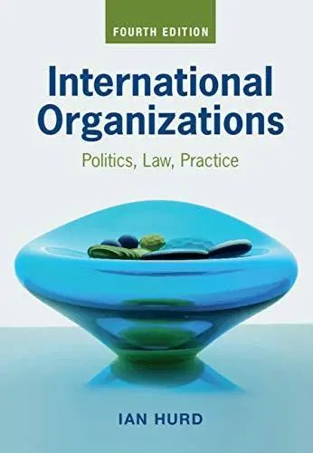
作品简介
随着国际组织在全球政治中的地位越来越突出，了解它们的的权力、局限性和影响就变得越来越迫切。这本书提供了对现代国际组织的权威性介绍，从其建立时的法律章程到它们在当代世界中处理的问题。结合法律、经验和理论方法，作者综合分析了联合国、世界贸易组织、国际刑事法院和其他十个重要的全球机构，以方便读者理解。最新的第四版经过全面修订和更新，涵盖与国际组织相关的热点案例和争议，如英国脱欧、贸易战、环境主义、强迫移民和边界争端。学习国际组织、国际机构、全球治理和国际法课程的本科生和研究生会对该书感兴趣。
02. 如何输掉信息战：
俄罗斯、虚假新闻和 冲突的未来
Nina Jankowicz，
_ How to Lose the Information War：Russia, Fake News, and the Future of Conflict_ ,
I.B. Tauris, 2020.
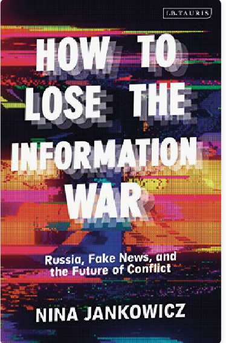
作品简介
自特朗普时代以来，美国和西方世界终于开始意识到网络战争的威胁和来自俄罗斯的攻击，似乎没有人能回答的问题是：对此，西方能做些什么? 相反，中欧和东欧国家多年来一直意识到这一威胁。本书作者为处于信息战前线的这些政府提供了建议。她从这场斗争中吸取的教训，以及试图让美国国会采取行动的经验，都使本书值得一读。《如何输掉信息战》给读者呈现了五个西方国家政府对俄罗斯信息战战术的反应——这些战术都失败了。她讲述了俄罗斯特工开展的活动，展示了我们如何能更好地理解这些攻击活动背后的动机，以及如何打败它们。最重要的是，这本书展示了正岌岌可危的是公民话语和民主的未来，以及真相本身的价值。
03. 国际关系：一个简短的介绍
Christian Reus-Smit，
_ International Relations：_
_ A Very Short Introduction_ ，
Oxford University Press，2020.
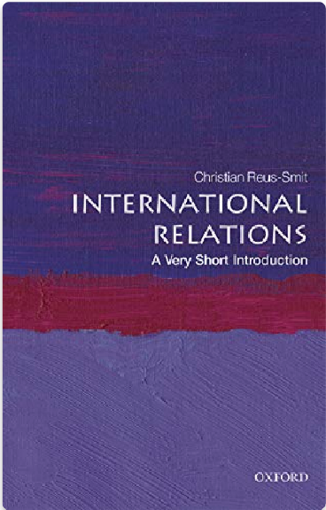
作品简介
国际关系影响着每个人的生活：安全、经济福利、权利、自由和环境。我们见证了世界从帝国体系向主权国家体系的变迁，这一主权国家体系沉浸在一系列复杂的国际机构中，这些机构都行使着一定程度的政治权威，具有深远的影响。这本极短的简介试图理清这个复杂的世界，并为理解全球政治变化的轮廓提供一个可用的框架。本书作者将理论视为理解国际关系的一个必要工具，但使其祛魅化，把它当作人类的日常实践来介绍。他考察了从现实主义到女性主义的一系列理论，将它们解读成研究关于政治权威的全球性组织的不同视角。历史上，这种组织是由不同的社会力量所塑造的，书中详细讨论了其中的四种力量：不断改变的战争模式、变化的经济条件、争取权利的斗争以及政治文化。最后，作者对在全球巨变时代中的国际关系的未来进行了反思。
04. 非洲的规范空间和法律动态
Katrin Seidel and Hatem Elliesie eds.,
_ Normative Spaces and Legal Dynamics in Africa_ ,
New York: Routledge, 2020.
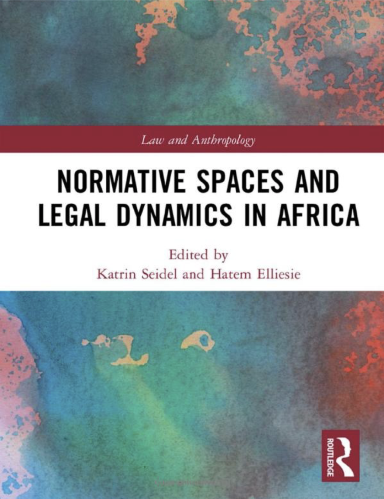
作品简介
非洲的法律现实反映了跨国的、地区的和本土的规范框架、制度与实践的交织，这挑战了领土主权国家的概念。本书分析了参与治理的各个行为体以及它们互动和竞争的条件。该研究遵循了空间法，对规范空间的强调有助于更好地理解权力关系、制度化的过程，以及正当性和规范性的产生。来自13个非洲国家的选择性案例研究提供了新的实证数据和对特定规范空间的深入洞察。个别章节考察了各种规范秩序、不同的行为体以及它们的影响之间的相互关系。对规范的不同理解和行为体之间的碰撞为价值协商开辟了空间和多个平台。作者分析了不同的学说、制度和实践是如何在翻译过程中被建构、争论和改写的，从而不断重塑着非洲的多维规范空间。本书提供了关于非洲法学的细微观点，为人类学、法律地理学、法律研究、社会学、政治科学、国际关系、非洲研究以及任何希望更好地理解法律（legal constellation）是如何被未经思考的和关于国家和法治的假定所塑造的学者和学生提供了资源。
05. 国际人权
Jack Donnelly and Daniel Whelan,
_ International Human Rights ,_
_ Six Edition_ ,
New York: Routledge, 2020.
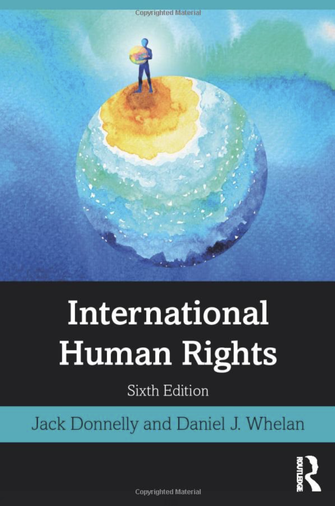
作品简介
经过全面的更新，《国际人权》第六版考察了自第二次世界大战结束以来国家和其他国际行为体处理人权问题的方式。这本独一无二的教科书大量关注了理论、历史、国际和地区制度以及跨国行为体在保护和促进人权中的作用。本书的目的是探索充满困境和争议的人权政治，以及国家、地区，尤其是国际上是如何应对这些人权政治的多重维度的。本书的特色有：1. 从头到尾的大幅度修订，包括非洲性少数群体的权利、危地马拉土著人民的权利、缅甸的罗兴亚人难民危机等新议题，以及一个有关人权和发展的新章节；2. 文本的特性，比如问题讨论、阅读建议、案例研究和促进课堂讨论以及深入考察主题的“问题”，被简洁而清晰地组织起来成广泛的主题。对人权、政治与国际关系、法律、刑事司法、社会学、社会工作、公共管理、国际发展等专业的课程而言，《国际人权》是一本必不可少的阅读材料。
06. 核革命的迷思：
原子时代的权力政治
Keir A. Lieber and Daryl G. Press, The Myth of the Nuclear Revolution: Power Politics in the Atomic Age ,
Cornell University Press, 2020.
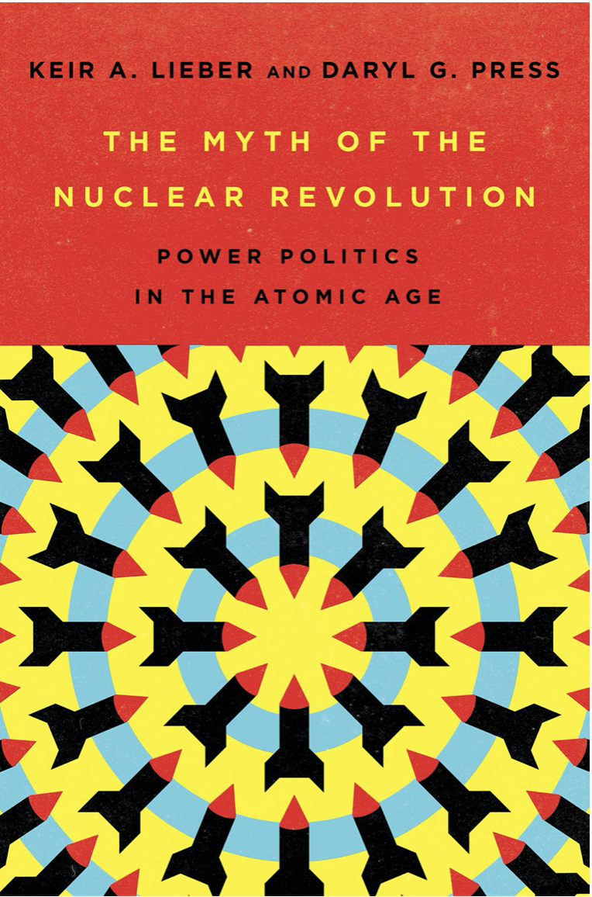
作品简介
几十年来，主要分析人士一直预测核武器将有助于缓和国际政治。其核心概念是，被这些可怕的武器所保护的国家可以停止与对手之间的激烈竞争：它们可以结束军备竞赛，缩减联盟规模，并停止对战略性领土的争夺。然而很少有理论和实践之间形成如此鲜明的对比。为什么国际关系在核时代依旧充满着竞争？甚至，为什么当今主要的地缘政治竞争如此激烈？本书解决了核时代的中心问题：在核武器阴影下，为何持续存在着激烈的地缘政治竞争。作者解释了为什么冷战时期超级大国之间疯狂竞争；为什么“相互确保摧毁”的建立并不能确保和平；为什么21世纪的快速技术变革将削弱核武器在世界关键热点地区的威慑作用。通过解释核革命的不足之处，作者解答了关于未来几十年威慑的最紧迫问题。这些问题包括：一个可靠的核威慑需要多少能力？传统的冲突如何可能成为核战争？以及我们需要多小心才能阻止新技术开启一个核不稳定的时代。
07. 共和国的屏障：
美国联盟的成就和危机
Mira Rapp-Hooper,
_ Shields of the Republic:_ _ The Triumph and Peril of America’s Alliances_ ,
Harvard University Press, 2020.
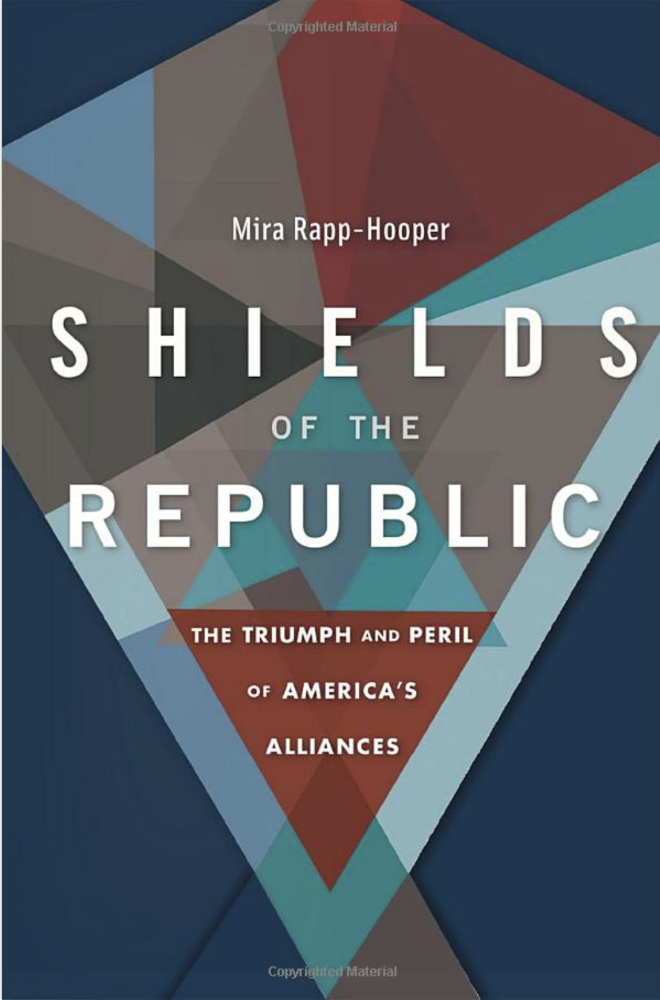
作品简介
难道美国的联盟体系如此有效，以至于政客和选民们未能意识到其在提供他们认为理所当然的安全方面的重要性吗？在其存在的头一个半世纪里，美国只有一个盟友——与法国之间的一个重要的却富有争议的军事方案。主要考虑到乔治·华盛顿对卷入纷扰的联盟之危险的警告，后来的美国总统直到第二次世界大战才考虑加入另一个联盟。然后一切都突然改变了。1948年至1955年，美国领导人将防御性安全保障延伸至欧洲和亚洲的23个国家。70年后，美国与37个国家结盟。在本书中，作者解释了美国史无前例的联盟体系的非凡成就。在冷战期间，一项以联合防御、威慑和保证为重点的大战略以远低于批评者所称的物质和政治成本帮助维持了和平。然而当苏联解体后，美国失去了这个体系所要对抗的对手。存续下来的联盟缺乏一个核心的战略逻辑，这让它们变得脆弱不堪。时至今日，联盟体系受到来自外部和内部的威胁。中国和俄罗斯试图通过冲突和非军事的侵蚀破坏美国的联盟体系。同时，美国政客和选民越来越怀疑联盟的成本和收益，并相信没有它们可能会更好。但是，如果联盟体系是其自身成就的受害者呢？作者认为，美国的国家安全需要联盟来威慑和防御军事冲突及非军事冲突。联盟体系未能在冷战后进行全面改革，但它仍对美国在21世纪的安全和繁荣而言至关重要。
08. 剧变：
人类社会与国家危机的转折点
Jared Diamond,
_ Upheaval: Turning Points for Nations in Crisis_ ,
Little, Brown and Company, 2019.
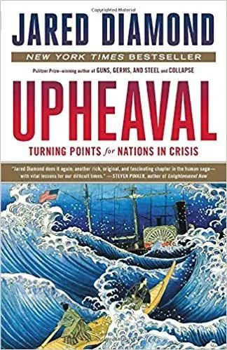
作品简介
本书已有中文版本：[美] 贾雷德·戴蒙德，《剧变：人类社会与国家危机的转折点》，曾楚媛译，北京：中信出版社2020年。
《剧变》探讨了一个当前人类社会面临的重大问题：当危机来临时，我们该如何应对？从个人视角而言，危机可以改变一个人的成长轨迹，如处理不当，终其一生会生活在负面情绪中。对于整个人类社会而言，危机可使一种文明没落、一个国家解体、一个时代终结。因此，如何分辨危机、应对危机，避免危机，化危机为机遇，实现个人和整个人类社会的剧变，是人类当下面临的主课题。普利策奖得主、《枪炮、病菌与钢铁》作者戴蒙德再一次发挥其历史叙事的顶级水准，带我们巡礼了各国在历史中的危机应对，并从社会学、心理学、经济学、生物进化等跨学科视角展现了人类自古以来何以应对危机的历史沿革，并谏言国家、企业及整个人类社会如何从个人应对危机的进化逻辑和生理变化中得到启示，以更加多维度的、宽视角地看待危机应对这一关乎人类未来的命题。(摘自本书中文版的豆瓣页面：https://book.douban.com/subject/34984693/)
09. 安息吧，主权
Dan Herzog,
_ Sovereignty, Rip_ ,
Yale University Press, 2020.
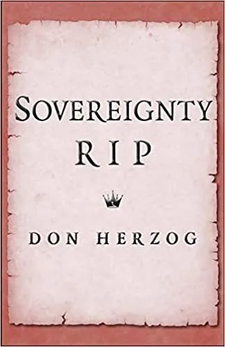
作品简介
主权的概念是否已经过时了？大概如经典理论所说的，社会秩序需要一个至高无上的统治者：一个具有无限、统一的、不需要负责的权威的行为体。但不知不觉中，我们已经彻底摧毁了这个理论。立宪主义限制了国家权威。联邦主义分割了主权。法治则使其可被问责。通过对生动的历史细节的刻画——欧洲数百万人被折磨，被屠杀，国王被判终身监禁，记者们对国际联盟的愚蠢怨声载道等等，作者在书中描绘了制造主权的政治斗争和破坏主权的力量。他认为，对于法律和政治问题而言，主权已不再是一个有用的指南，反而造成了一些有害的混乱。是时候，或者早就需要，放弃主权了。
10. 布鲁塞尔效应：欧盟如何治理世界
Anu Bradford,
** The Brussels effect:** ** How the European Union Rules the World , **
Oxford University Press, 2020.
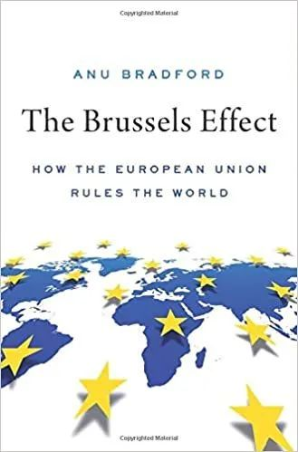
作品简介
对许多观察家来说，欧盟正陷入一场严重的危机。增长缓慢、十年紧缩后的政治动荡、英国脱欧，以及亚洲影响力的提升，欧盟在世界舞台上被视为一个衰落的大国。作者在新书中提出了相反的观点——布鲁塞尔效应。欧盟仍然是一个极具影响力的、以自己的形象塑造世界的超级行为体。通过颁布规范国际商务的法规，提高世界范围内的标准，以及引领国际商贸中多个重要领域的欧洲化进程，欧盟仍然能够在数据隐私、消费者健康和安全、环境保护、反垄断和管理网络仇恨言论等方面成功地塑造政策。与超级大国发挥全球影响力的方式不同，作者在2012年发明了“布鲁塞尔效应”一词来形容欧盟的影响方式。欧盟避免了直接强加标准的模式，单凭市场性力量就让跨国公司自愿延长欧盟规则对他们的全球业务的管理。《布鲁塞尔效应》一书说明了欧盟是如何获得这种权力的，为什么跨国公司使用欧盟标准作为全球标准，为什么欧盟在经济衰退的情况下仍能维持作为全球监管者的角色，并且可能在未来继续保持这种影响力。
11. 中国的西方地平线：
北京和欧亚大陆的新地缘政治
Daniel Markey,
_ China’s Western Horizon: Beijing and the New Geopolitics of Eurasia_ ,
Oxford University Press, 2020.
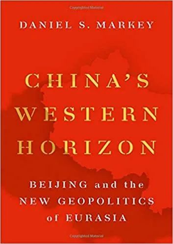
作品简介
中国正积极地将其财富和经济实力转变为发挥全球政治影响力的有力工具。但中国的外交政策倡议在即将面对中国以外的本土和地区的实际情况时，被重新塑造和定义。本书作者预测了中国的努力在包括南亚、中亚和中东在内的欧亚大陆上可能如何发挥作用。通过大量的访谈、旅行和历史研究，作者描述了在巴基斯坦、哈萨克斯坦和伊朗等国不同的人对中国的看法有多大的不同。该地区的强力特权集团在希望在与中国的联系中获益，而其他人则担心商业和政治损失。类似地，欧亚大陆的政治家们也在争相利用中国的能源采购、武器销售和基础设施投资。这些国家的领导人正在与中国合作，以超越他们的战略竞争对手，包括印度和沙特阿拉伯，同时也能与俄罗斯和美国就（双边）关系展开谈判。总的来说，作者预计中国参与的不断深化将有利于该地区的强人，并加剧欧亚地区的国家内部和国家之间的政治紧张。为了充分利用美国在这一地区有限的影响力，作者认为，美国决策者应追求选择性和本土化的战略，以便为美国在欧亚地区的特定目标服务，并且在长期更好地与中国竞争。
12. 可感的政治：国际关系的可视化
William Callahan,
_ Sensible Politics: Visualizing International Relations_ ,
Oxford University Press, 2020.
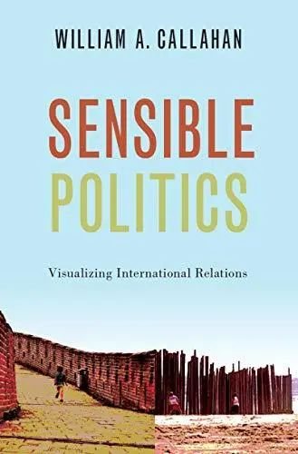
作品简介
视觉形象在国际政治中无处不在，但我们应如何理解它们呢？在本书中，作者运用他在理论和电影制作方面的专长，不仅探索了视觉（visuals）的意义，还研究了视觉如何在“感性的情感共同体”中把我们联系起来，并带来直击内心的触动。书中对视觉图像（照片、电影、艺术）和视觉工艺品（地图、面纱、墙壁、花园、网络空间）的丰富分析表明，批判性学术研究需要如何超越身份和安全问题，以欣赏社会秩序和世界秩序的创造性政治。在这里，“可感知的政治”不仅仅是感官层面的，而是超越了图示和意识形态，关注日常生活中的情感政治。通过分析来自亚洲和中东的视觉形象的意义和影响，本书挑战了我们对以欧洲为中心的国际政治的理解。本书为我们提供了一种独特的政治研究路径，它不仅让我们从视觉的角度思考，也让我们以视觉的方式感受——并且创造性地以视觉的方式行动，以实现对政治的多感官理解。
13. 劳特里奇公共外交手册
**Nancy Snow & Nicolas eds., **
Routledge Handbook of Public Diplomacy, Second Edition ,
Routledge, 2020.
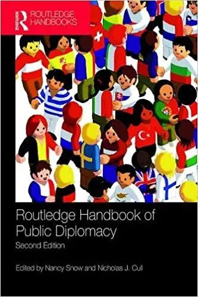
作品简介
《劳特里奇公共外交手册》第二版由国际关系中公共外交分领域的两位著名学者合编，与第一版相比增加了16章。十年后的今天，全球公共外交的新格局已经形成，全球范围内公共外交专业的主要研究生项目也已成型。这本手册与其他手册的不同之处在于它对第一版的继承和连续性。第一版的内容比本版更侧重于军事。这个版本包含了与美国相关的内容，但是所有的研究案例都是在美国以外的，这不仅是为了吸引全球的学者和从业者，也是为了提供比（传统）以欧美为中心的竞争更新鲜的内容。在第1-4部分，原作者的贡献被保留，但也有许多修订，增加了新的内容。第五部分和第六部分包括16个公共外交领域的全球案例研究，增加了10位内容贡献者。书的结尾部分包括数字和企业公共外交的章节，最后一章是关于心灵域（noosphere）和心灵政治（noopolitik）的介绍性的章节，因为它们与公共外交有关。
14. 核武器与美国大战略
Francis J. Gavin,
_ Nuclear Weapons and American Grand Strategy_ ,
Washington: Brookings Institution Press, 2020.
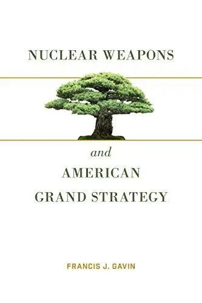
作品简介
核武器如何影响美国大战略和国家关系？本书旨在探讨我们对这一问题的已知与未知。1945年8月，美国在广岛和长崎投下原子弹，世界第一次感知核武器的威力。在随后的几十年里，随着更多先进武器、攻击性战略和新的核大国的出现，这些武器对全球的威胁不断加深。自此，无数的书籍、报告和文章，甚至“安全研究”，一个新的学术领域——都试图解释所谓的核革命。
作者弗朗西斯·J·加文（Francis J. Gavin）认为学术界和大众对核武器的许多关键问题的理解，往好说是不完整的，往坏说是错误的。这些重要的、被误解的问题包括：核威慑如何发挥作用；核胁迫是否有效；美国如何以及为什么选择其核战略；为什么各国选择发展或不发展自己的核武器；以及最根本的是，核武器是使世界更安全还是更危险。这些问题和类似的问题仍然很重要，因为核危险正作为一种真正的威胁重新出现。新兴技术和不断变化的大国竞争似乎预示着，在以周期性世界末日的前景为特点的美苏冲突结束仅30年后，一种新的冷战类型将出现。《核武器与美国大战略》帮助决策者应对最新的挑战。该书行文清晰、通俗易懂，有助于学生、学者以及感兴趣的人深入了解核危险的历史和未来。
15. 欧盟条约制定工作的转变：
1950年以来议会、全民公决和法院的崛起
Dermot Hodson and Imelda Maher,
**** _ The Transformation of EU Treaty Making: The Rise of Parliaments, Referendums and Courts since 1950_ ,
Cambridge: Cambridge University Press, 2019.

作品简介
条约的制定是那些声称在国际舞台上有发言权和行动权的国家之间的斗争场所。在这方面，欧洲联盟（欧盟）是一个重要的试验案例，因为在过去60年中，欧盟及其成员国缔结条约的方式发生了重大变化。本书从欧盟法、比较宪法学和国际关系的角度，分析议会、人民和法院如何以及为何进入了一个曾经由政府主导的领域。本书提供了公众信任和政治策略在解释欧盟条约制定过程中重要性的定性和定量证据，并对欧盟条约过于僵化的观点提出了质疑。本书分析了欧盟及其每个成员国的法律发展，对于那些希望了解欧盟在条约制定方面有争议的试验及其更广泛意义的人来说，这将是必不可少的读物。
16. 国际体系中的伊朗：
在大国与伟大思想之间
Heinz Gärtner and Mitra Shahmoradi, eds.,
_ Iran in the International System: Between Great Powers and Great Ideas_ ,
Routledge, 2019.
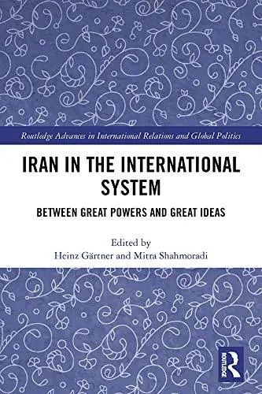
作品简介
本书以伊朗的历史及其与大国和地区邻国的关系为基础，探讨了伊朗革命以来伊朗国际关系中的连续与变化。伊朗常常是海湾地区和跨大西洋关系的政治辩论中心。在特朗普政府于2018年5月退出由联合国安理会五个常任理事国签署的伊朗核问题协议后，伊朗与世界的关系进入了一个新的阶段。伊朗国内对改善与欧洲的关系寄予厚望，本书呼吁伊朗领导层对美国、欧洲和亚洲采取一种创新的方式，以在地区和国际结构中找到自己的角色。考虑到影响伊朗内外事务的中心大国之间的关系，作者探讨了权力关系、谈判、国际制度和国际法的作用，并在本土和地区的情境下考察了伊朗的国内动机和角色。本书适合对政治学、国际关系、伊朗政治、伊朗外交政策感兴趣的学者和学生，也有助于政策制定者、记者和军方对伊朗问题有更深的认识。
17. 国际关系案例：原理与应用
Donald M. Snow,
_ Cases in International Relations: Principles and Applications_ ,
Rowman & Littlefield Publishers, 2019.
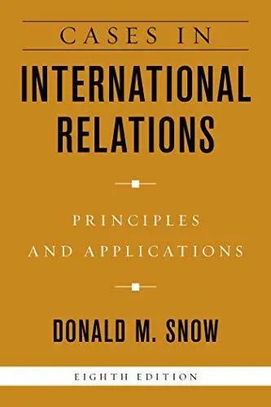
作为任何一门国际关系入门课程的主题的补充，斯诺（Snow）的这本书提供原创的案例研究，以调查国际体系的状况并深入探讨当前关注的问题。这些案例具有即时性，涵盖了多种地缘政治话题，文字通俗易懂，与当今的头条新闻密切相关。第八版收录了18个较短的案例研究——比上一版增加了4个，每个案例的设计都非常容易读懂，可以一次读完。新的主题包括石油腐败（petrolism）、外交、权力工具、人权的普遍性、网络安全和网络战、恐怖主义和核扩散。
**
**
**
**
**
**
添加 “国小政”微信
获取最新资讯


国政学人
支持学术公益与知识传播
微信扫一扫赞赏作者 __赞赏
已喜欢，对作者说句悄悄话
取消 __
发送给作者
发送
最多40字，当前共字
上一页 1/3 下一页
长按二维码向我转账
支持学术公益与知识传播
受苹果公司新规定影响，微信 iOS 版的赞赏功能被关闭，可通过二维码转账支持公众号。